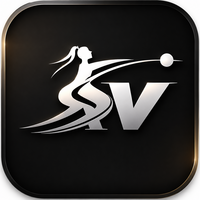

AgendarCentro de kinesiología especializado en rehabilitación musculoesquelética y recovery. Atención integral basada en la evaluación, el tratamiento y la prevención de lesiones, con un enfoque personalizado.
Agenda tu evaluación gratuita| Lunes, miércoles y viernes | 07:00 a 21:00 |
| Martes y jueves | 10:00 a 21:00 |
| Sábado | 10:00 a 12:00 |
| Domingo | Cerrado |
Monjitas 550, oficina 11, cuarto piso
Santiago Centro, a pasos del Metro Bellas Artes